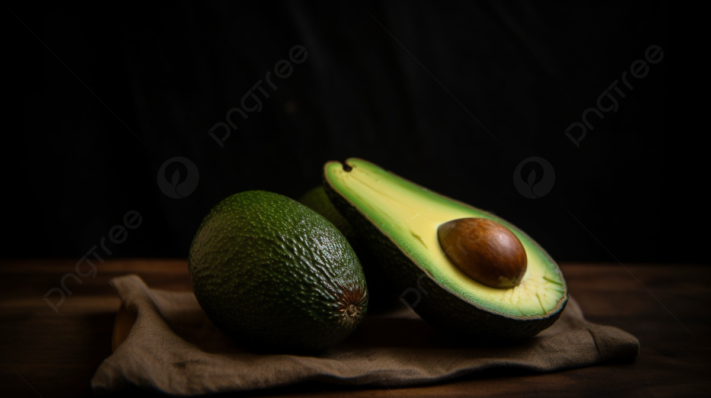

Alpukat, atau avokad, adalah buah yang kaya akan lemak sehat, serat, dan berbagai vitamin serta mineral. Buah ini sering digunakan dalam salad, smoothie, dan sebagai olesan pada roti. Alpukat juga dikenal karena manfaat kesehatannya, termasuk mendukung kesehatan jantung dan membantu penyerapan nutrisi lainnya.
Alpukat secara botani dikategorikan sebagai beri besar yang mengandung satu biji besar di dalamnya.[7] Penelitian genom alpukat menunjukkan bahwa evolusinya dipengaruhi oleh peristiwa poliploidi dan bahwa varietas komersialnya berasal dari hibrida. Pohon alpukat sebagian dapat melakukan penyerbukan sendiri, tetapi umumnya diperbanyak melalui teknik pencangkokan untuk mempertahankan kualitas buah yang konsisten.[8] Saat ini, alpukat dibudidayakan di berbagai negara dengan iklim tropis dan Mediterania.[4] Hingga tahun 2023, Meksiko menjadi produsen alpukat terbesar di dunia, menyumbang 29% dari total panen global yang mencapai 10,5 juta ton.
Buah alpukat dari varietas domestik memiliki daging berwarna hijau keemasan yang lembut dan bertekstur mentega saat matang. Bergantung pada kultivarnya, kulit alpukat bisa berwarna hijau, coklat, ungu, atau hitam, dengan bentuk yang dapat menyerupai buah pir, telur, atau bulat. Untuk keperluan komersial, buah ini biasanya dipanen dalam keadaan belum matang dan dibiarkan matang setelah dipanen. Kepadatan nutrisi dan kandungan lemak tinggi dalam daging alpukat menjadi nilai tambah dalam berbagai jenis masakan, termasuk diet vegetarian.
Di daerah produksi utama seperti Chili, Meksiko, dan California, kebutuhan air yang tinggi dalam budidaya alpukat memberikan tekanan besar terhadap sumber daya lokal.[10] Produksi alpukat juga dikaitkan dengan berbagai dampak lingkungan dan sosial, termasuk deforestasi serta isu hak asasi manusia akibat sebagian kendali produksi di Meksiko yang dikuasai oleh kelompok kejahatan terorganisir. Perubahan iklim diperkirakan akan menyebabkan perubahan signifikan pada zona pertumbuhan alpukat yang cocok, serta meningkatkan tekanan pada daerah produksi akibat gelombang panas dan kekeringan
PEMBAYARAN DI TEMPAT / COD Hanya untuk Jakarta, Bekasi, dan Depok POTONGAN ONGKRIR RP. 5.000,- UNTUK PEMELIAN VIA TRASFER
| NO | Jenis Alpukat | Harga 1 kg | Harga 2 kg | Harga 3 kg |
|---|---|---|---|---|
| 1 | Alpukat Mentega | Rp. 35.000, - | Rp. 65.000, - | Rp. 90.000, - |
| 2 | Alpukat Miki | Rp. 50.000, - | Rp. 90.000, - | Rp. 135.000, - |
| 3 | Alpukat Aligator | Rp. 30.000, - | Rp. 55.000, - | Rp. 80.000, - |
| 4 | Alpukat Kendil | Rp. 40.000, - | Rp. 75.000, - | Rp. 100.000, - |